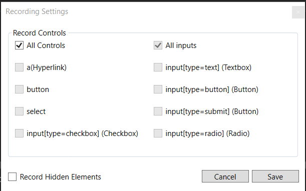

Area Recording¶
Area Reording enables you to record all interactable controls inside a specific area(div or any content control).
By default the following controls are automatically recorded:
<select></select>
<a></a>
<input></input> (text, checkbox, radio, submit)
<button></button>
Note
Hidden controls are not recorded by default. This can be changed in the Recording Settings for the particular UI Map.
To record, press the Start Area Recording button, and a few things will happen:
The browser will refresh and when hovering, a blue border will appear indicating that when clicked it will record all controls withing that area.
On the Recorder Window, a stop button will appear so you can stop the session when you are done.
When you click on a browser area, all the controls will appear on the content window.
Click the Save button to save changes to the UI Map file.

Recording Settings¶
Recording settings allow you to select which types of controls to record, and wheter or not to record hidden elements. Once changes are made to the settings, they will be saved with the UI Map.
